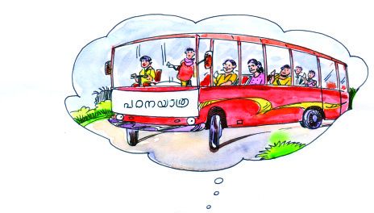
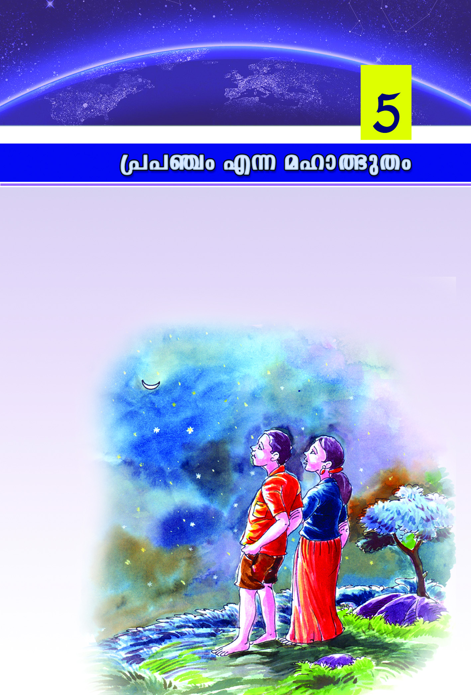
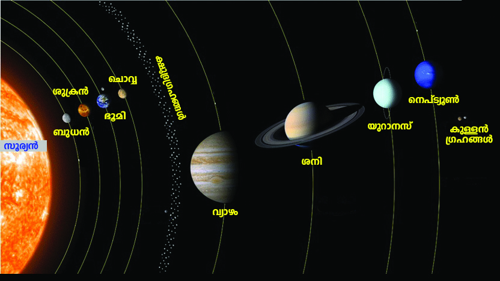
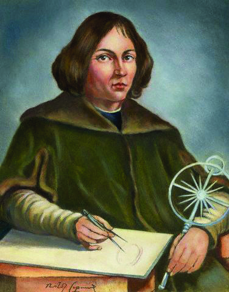
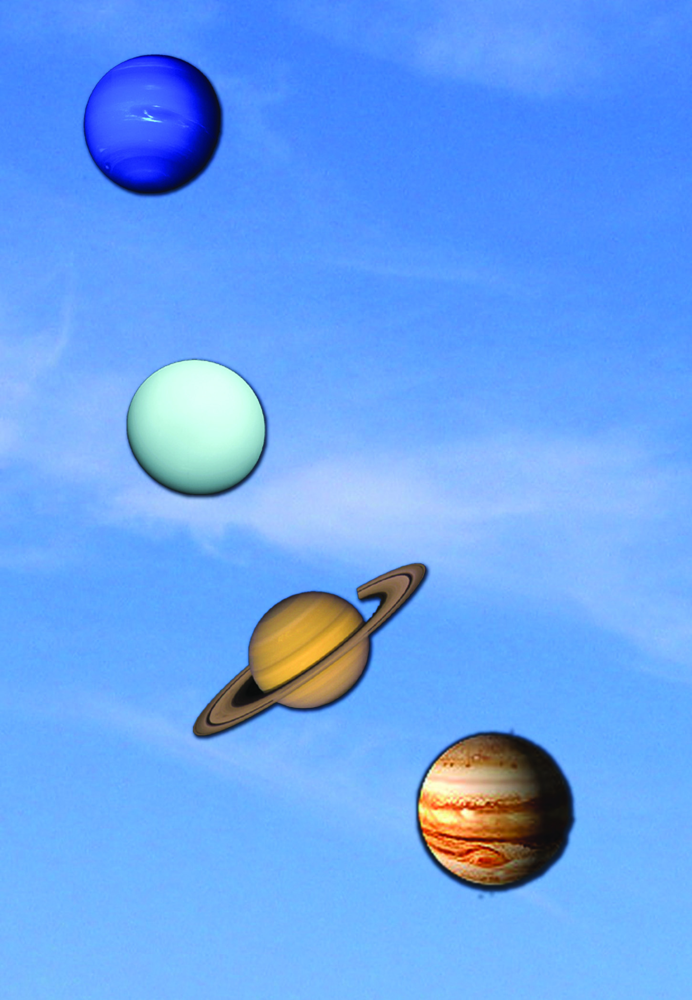
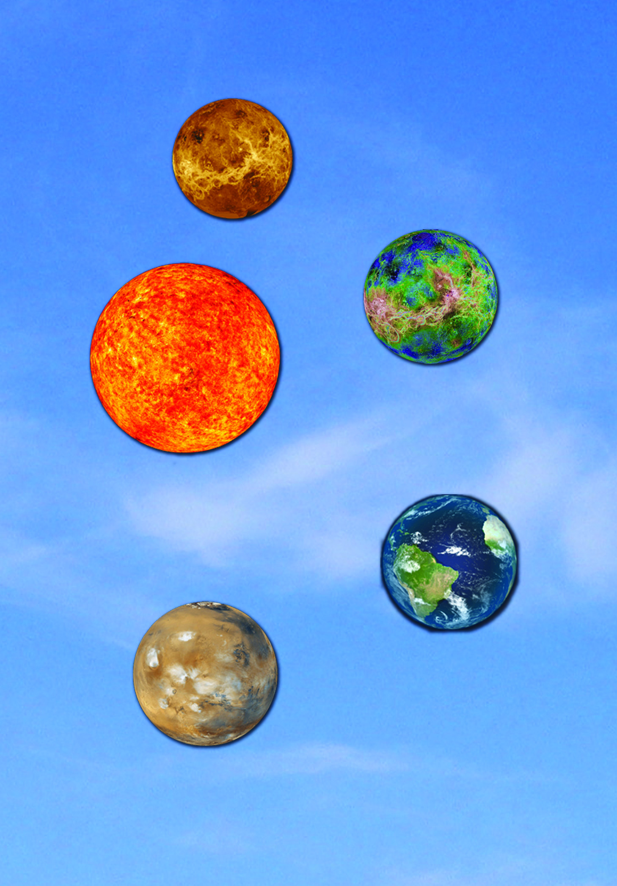
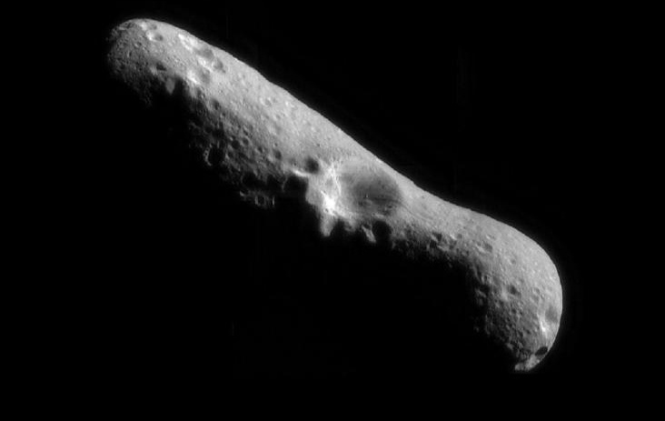
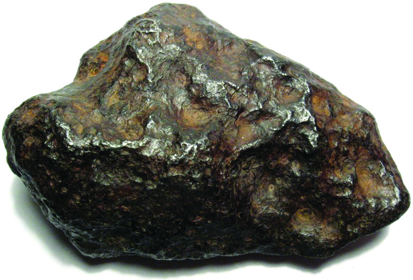
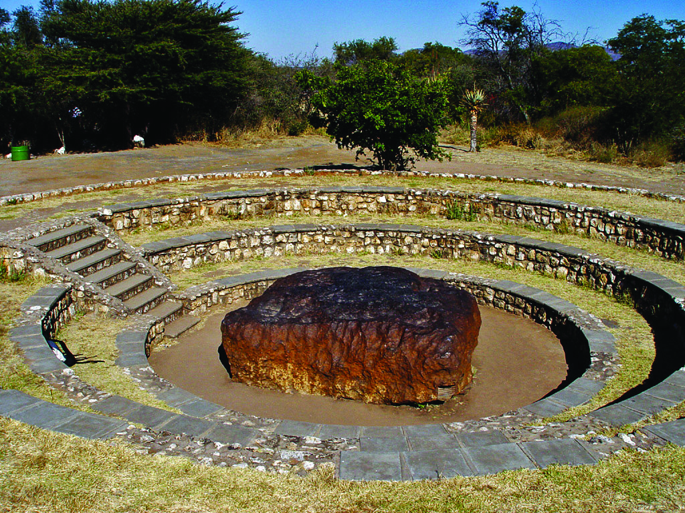
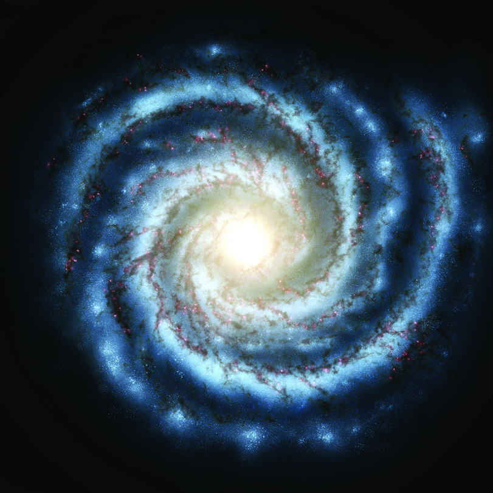

Icp-X-temsS sNe-hn-Smw
4141
Icp-X-temsS sNe-hn-Smw
\nß-fpsS IpSpw-_-Øn¬ B¿s°m-s°-bmWv hcp-am-\-ap-≈Xv?
]´nIs∏-Sp-Øp.
IpSpw-_-߃°v hcp-am\w e`y-am-Ip∂ a‰pNne kμ¿`-߃ t\m°p.
1.
Hcp \n›nX XpI _m¶n¬ \nt£-]n-°p∂p
2.
kz¥-am-bp≈ sI´nSw I®-hS Bh-iy-߃°mbn sImSp-°p∂p
3.
hyh-km-b bqWn‰v sa®-s∏´ coXn-bn¬ \S-Øp∂p
4.
C≥jpd≥kv GP‚mbn {]h¿Øn-°p∂p
Cu kμ¿`-ß-fn¬ _m¶v\nt£-]-߃°p≈ ]en-i, sI´n-S-Øns‚
hmSI, hyh-km-b bqWn-‰n¬\n∂p≈ em`w, C≥jp-d≥kv IΩo-j≥
XpS-ßnbh IpSpw-_-߃°v e`n-°m-dp≈ hcp-am-\-ßfmWv.
IpSpw-_-߃°v hcp-am\w e`n-°p∂ hyXykvX t{kmX- p-Iƒ
{]Xn]mZn-°p∂ ]Z-kq-cy≥ t\m°p.
IpSpw-_-߃°v hcp-am\w e`n-°p-∂Xv \nt£]-߃, I®-h-Sw, Irjn,
hyh-km-bw, hkvXp-h-I-Iƒ, tkh-\-߃ XpSßn hnhn[ t{kmX- p-
Ifn¬\n∂mWv. Cßs\ Hcp IpSpw-_-Ønse AwK-߃°v hnhn[
t{kmX- p-I-fn¬\n∂v e`n-°p∂ {]Xn-^-e-amWv IpSpw-_mw-K-ß-fpsS
hcp-am\w.
\nß-fpsS IpSpw-_-Øns‚ hcp-am\w GsX√mw t{kmX- p-
Ifn¬\n∂mWv cq]-s∏-Sp-∂Xv?
sNehpw ]e-hn[w
hnhn[ t{kmX- p-I-fn-eqsS IpSpw-_-Øn\v e`n-°p∂ hcp-am\w
sIm≠mWv IpSpw-_-Øns‚ s]mXp-hm-b Bh-iy-ßfpw AwK-ß-fpsS
Iqen
em`w
iºfw
IΩo-j≥
hmSI
IpSpw-_-
h-cp-am\w
sI´nS\n¿amWtPmen
k¿°m¿ tPmen
_m¶v\nt£]w
alnfm {][m≥ GP‚ v
]eni
I®-hSw
sI´nSw hmS-Ibv°v
Page 41
Page 42
4242
kmaq-ly-imkv{Xw V
kmaq-ly-imkv{Xw V
hy‡n-KXamb Bh-iy-ßfpw \nd-th-‰p-∂-Xv. Hcp IpSpw-_-Ønse
Bhiy-߃ F√mw Xpey {]m[m-\y-ap-≈hb-√. Nne-sXms° AXym-
hiy-am-Wv. a‰pNneXv In´n-bm¬ \√Xv. _m°n-bp-≈h In´n-bns√-¶nepw
Ipg-∏-an√. IpSpw_hcp-am-\-Øns‚ ASn-ÿm-\-Øn¬ CØcw
BhiyßfpsS ap≥K-W-\m-{Iaw \n›-bn-t°-≠-Xm-Wv. AX-\p-k-cn-
®pthWw sNe-hp-Iƒ {Iao-I-cn-t°-≠-Xv.
Hcp IpSpw-_-Øns‚ {][m\ sNehp-Iƒ kqNn-∏n-°p∂ Nn{Xw
\nco£n°p. GsXms° sNe-hp-I-fmWv Cu IpSpw-_-Øn-t‚sX∂v
Is≠-Øm-a-t√m. Cu IpSpw-_-Øn\v as‰-s¥√mw sNe-hp-IƒIqSn
D≠mImw? Ah Nn{X-Ønse hn´p-t]m-b- ÿ-eØv FgpXnt®¿°p-at√m.
Cu sNe-hp-I-fn¬ NneXv ssZ\w-Zn\ Bhiy߃°p th≠n-bp-≈h-
bmWv. a‰pNneXv {]tXyI kμ¿`-ß-fn¬ hcp-∂- sNe-hp-I-fmWv.
`£Ws®ehv, hkv{X-߃ hmßp-∂-Xn-\p≈ sNe-hv, hmbv]-I-fpsS
Xncn-®-Shv F∂n-h {]Xo-£nX sNe-hp-IfmWv. A{]-Xo-£n-X-amb kw`h-
߃ \ΩpsS Pohn-X-Øn¬ D≠m-Imw. A]-I-Sw, {]Ir-Xn-Zp-c-¥w, tcmK-
߃ XpS-ßnbhaqew D-≠m-Ip∂ sNe-hp-Iƒ A{]-Xo-£nX sNe-hp-
I-fmWv. {]Xo-£n-°msX D≠m-Ip∂ CØcw sNe-hp-Iƒ°mbn
hcpam\-Øn¬ Hcp`mKw IcpXnhbv°m-hp-∂-Xm-Wv.
`£-W-s®-ehv
`£-W-s®-ehv
`£-W-s®-ehv
`£-W-s®-ehv
`£-W-s®-ehv
hkv{Xw hmßm-\p≈
hkv{Xw hmßm-\p≈
hkv{Xw hmßm-\p≈
hkv{Xw hmßm-\p≈
hkv{Xw hmßm-\p≈
sNehv
Nehv
Nehv
Nehv
Nehv
bm{Xms®ehv
bm{Xms®ehv
bm{Xms®ehv
bm{Xms®ehv
bm{Xms®ehv
Bip-]-{Xns®ehv
Bip-]-{Xns®ehv
Bip-]-{Xns®ehv
Bip-]-{Xns®ehv
Bip-]-{Xns®ehv
hmbv]m-Xn-cn-®-Shv
hmbv]m-Xn-cn-®-Shv
hmbv]m-Xn-cn-®-Shv
hmbv]m-Xn-cn-®-Shv
hmbv]m-Xn-cn-®-Shv
Page 43
Icp-X-temsS sNe-hn-Smw
4343
Icp-X-temsS sNe-hn-Smw
kmº-ØnI kpc-£n-XXzw (Economic Security)
hcp-am-\tØ-°mƒ IqSp-X¬ sNehv D≠m-Ip-∂Xv IpSpw-_-Øn¬
kmºØnI{]Xn-k-‘n°v CS-bm-°pw. F∂m¬ sNehv hcp-am-\-tØ-
°mƒ Ipd-hm-Ip-tºmƒ an®-ap≠mIp-∂p. an®w hbv°p∂ XpI IpSpw-
_-Øns‚ kºm-Zy-am-Wv. kmº-ØnI kpc-£n-XXzw Dd-∏m-°p-∂-Xn¬
kºmZyw kp{]-[m\ ]¶v hln-°p-∂p.
kmº-ØnIkpc-£n-X-Xz-sa-∂Xv sa®-s∏´ PohnXw \ne-\n¿Øp-∂-Xn-
t\m-sSm∏w `mhn-bn-ep-≠m-Im-hp∂ sNe-hpIƒIqSn \nd-th-‰m≥
Ignbp∂ kml-N-cy-am-Wv. IpSpw-_-h-cp-am\w ^e-{]-Z-ambn D]-tbm-K-
s∏-Sp-Øp-Ihgn kmº-Øn-I -kp-c-£n-XXzw t\Smw.
IpSpw-_-ß-fpsS hcp-am-\hpw sNehpw t\m°n-bm¬ Xmsg-∏-d-bp∂ aq∂v
Ah-ÿ ImWm-hp-∂-Xm-Wv:
$
hcp-am-\hpw sNehpw Xpeyw
$
hcp-am\w IqSp-X¬, sNehv Ipdhv
$
hcp-am\w Ipdhv, sNehv IqSp-X¬
˛
hcp-am\w an®whbv°m≥ Ign-bp-∂Xv CXn¬ GXv Ah-ÿ-bn-emWv?
˛
kmº-ØnIkpc-£n-X-Xz-w km[y-am-Ip-hm≥ klm-bn-°p∂
Ahÿ GXmWv?
˛
AanXamb sNe-hp-Iƒ \nb-{¥n-°p-∂Xv kmº-ØnI kpc-£n-XXz-
Øn\v KpW-I-c-amtWm?
anX-hybioew
C∂v [mcmfw D¬∏-∂-
߃ \ap°v e`y-amWv.
Ch Hmtcm∂pw hmßp-
hm≥
t{]cn-∏n-°p∂
XcØn-ep≈ ]c-ky-߃
[mcmf-ap≠v. ]c-ky-ß-
fpsS t{]c-W-bm¬ AanX-
ambn D¬∏∂-߃ hmßp-∂Xv sNehv h¿≤n-∏n-°p-w. am{X-a√ \ma-dn-
bmsX ho≠pw Ah hmßp-hm\pw D]-tbm-Kn-°p-hm\pap≈ t{]cW
D≠m-°p-Ibpw sNøpw. ]c-kyßfpsS {]tem-`-\-ßfn¬ hogmsX
""\ap°v F√m-h-cp-sSbpw
Bh-iy-ßsf Xr]vXn-s∏-Sp-
Øp-hm-\p≈ hn`-h-ß-fp≠v.
F∂m¬ Hcm-fp-sS-t]mepw
AXym-{K-lsØ \nd-th‰m-
\n√-Xm-\pw.''
˛Km‘nPn
Page 44
4444
kmaq-ly-imkv{Xw V
kmaq-ly-imkv{Xw V
iºfw
hkvXp-h-I-
Ifn¬ \n∂p≈
hcp-am\w
20,000
1,000
C\w
XpI
C\w
XpI
hchv (cq])
sNehv (cq])
21,000
BsI
Acn, ]e-N-c°v
]®-°dn
]m¬, a¬kyw
t^m¨, ]{Xw
Id‚ v Nm¿Pv
hkv{Xw
hnZym-`ymkw
NnIn’
bm{X
hmbv] Xncn-®-Shv
C≥jp-d≥kv
a‰v sNe-hp-Iƒ
4,000
2,000
3,000
1,000
900
1,000
500
2,000
3,000
3,000
2,000
1,000
BsI
23,400
hnthI-]q¿hw KpW-ta-∑-bp≈ Ah-iy-h-kvXp-°ƒ hmßp-hm≥ \ap°v
IgnbWw. Bh-iy-߃ \nd-th-‰p-∂-Xn-\v ^e-{]-Z-ambn hcp-am\w sNehn-
Sp∂ kz`mh- k-hn-ti-j-X-bmWv anX-hy-b-io-ew. anX-hy-b-ioew
PohnXcoXn-bpsS `mK-am-t°-≠-Xp≠v. kmº-ØnI kpc-£n-X-Xz-Øn\v
anX-hy-b-ioew klm-bn-°pw. efn-X-Po-hnXw anX-hy-b-io-e-Øn\v A\nhm-
cy-am-Wv.
anXhybw IpSpw-_-Ønse F√m AwK-ßfpw ioe-am-t°-≠-Xm-Wv.
Ip´nIƒ F∂ \ne-bn¬ anXhyb-Øns‚ `mK-ambn Fs¥√mw Imcy-
߃ sNømw.
$
BUw-_-c- h-kvXp-°ƒ Dt]-£n-°mw.
$
D¬∏m-Zn-∏n-°m≥ Ign-bp∂ `£y-h-kvXp-°ƒ ho´n¬Øs∂
D¬∏mZn-∏n-°mw.
$
IqSp-X¬ Is≠Øn FgpXnt®¿°p-a-t√m.
IpSpw-_w ˛ hchpw s
pSpw-_w ˛ hchpw s
pSpw-_w ˛ hchpw s
pSpw-_w ˛ hchpw s
pSpw-_w ˛ hchpw sNehpw
Nehpw
Nehpw
Nehpw
Nehpw
Hcp IpSpw-_-Øns‚ Hcp amksØ hchpsNehv IW°v {i≤n°p.
Page 45
Icp-X-temsS sNe-hn-Smw
4545
Icp-X-temsS sNe-hn-Smw
Xmsg \¬In-bn-´p≈ kqNI߃ D]-tbm-Kn®v Cu IpSpw-_-Øns‚
hchpsNehv IW-°p-Iƒ hni-I-e\w sNbvXm¬ Fs¥ms°
Is≠Ømw.
$
IpSpw-_-Øns‚ BsI hchpw BsI sNehpw.
$
kmº-ØnIkpc-£n-X-Xz-Øn-\mbn Cu IpSpw-_-Øn\v sNøm≥
Ignbp∂ Imcy-߃.
Cßs\ hchpsNe-hp-Iƒ ]e-t∏mgpw IpSpw-_-߃ FgpXn kq£n-
°m-dn√. F∂m¬ IpSpw-_-Øns‚ hcp-am-\hpw {]Xo£n-°p∂ sNehp-
Ifpw ap≥Iq´n ImWm≥ Ign-™m¬ sa®-s∏´ Pohn-X-Øn\v klmbIc-
am-Ipw. Cßs\ ap≥Iq´n hchpsNehv IW-°p-Iƒ FgpXn kq£n-°p-
hm≥ Ign-™m¬ AXns\ IpSpw_ _P‰v (Family Budget) F∂v ]d-bmw.
IpSpw_ _P‰v Xbm-dm-°p-∂-Xp-sIm≠v Fs¥√mw KpW-ßfp≠v F∂p
t\m°mw.
$
hc-hn-\-\p-k-cn®v sNehv {Ia-s∏-Sp-Øm≥ klm-bn-°p∂p
$
ap≥KW\ \n›-bn®v Bh-iy-߃ \nd-th-‰m≥ Ign-bp∂p
$
kºm-Zy-io-ew, anX-hy-b-ioew F∂nh-bpsS Bh-iy-IX Xncn-®-dn-
bm≥ km[n°p∂p.
F√m IpSpw_ßfp-sSbpw hchpsNe-hp-Iƒ Hcp-t]mse A√. IpSpw_
_P-‰p-Iƒ hyXy-kvX-am-Ip-∂-Xns‚ ASn-ÿm\w IpSpw_-ß-fpsS
hcp-am-\-Ønepw sNe-hnepw D≠m-Ip∂ G‰-°p-d-®n-ep-I-fm-Wv. \ap°v
Np‰pw ImWp-∂-h-cn¬ hcp-am\w IqSp-Xep≈-hcpw Ipd®p≈-hcpw D≠v.
CXv IpSpw-_-߃ XΩn-ep≈ kmº-ØnI A¥-c-Øn\v hgnsXfn-°p∂p.
IpSpw-_-߃ XΩn-ep≈ kmº-ØnI A¥cw Ipd-bv°p-∂-Xn-\mbn
tI{μ˛kw-ÿm\ k¿°m-cp-Iƒ \nc-h[n {]h¿Ø-\-߃ \S-∏m°n
hcp∂p.
{]h¿Ø\ _P-‰v
IpSpw_ _P‰v F∂-Xp-t]mse \ap°p Np‰p-ap≈ ÿm]-\-߃°pw
kwL-S-\-Iƒ°pw _P‰v D≠m-Imw. AXp-t]mse Nne-t∏mƒ {]h¿Ø\
_P-‰p-Ifpw Xbm-dm-°m-dp≠v. Hcp {]tXyI {]h¿Ø-\-Ønt\m,
]cn]mSnt°m th≠nam{Xw Xbm-dm-°p∂ hchpsNehv IW-°mWv
{]h¿Ø\_P-‰v. ]T-\-bm-{Xbv-°mbn Xbm-dm-°p∂ _P‰v {]h¿Ø\
_P-‰n\v DZm-l-c-W-amWv.
Page 46

4646
kmaq-ly-imkv{Xw V
kmaq-ly-imkv{Xw V
{]h¿Ø\ _P‰v˛]T-\-bm{X
hchv (cq])
sNehv (cq])
C\w
XpI
C\w
XpI
$
$
$
$
$
$
BsI
BsI
NphsS sImSp-Øn-cn-°p∂ amXrI
D]tbm-K-s∏-SpØn kmaq-ly-imkv{X
¢_v kwL-Sn-∏n-°p∂ GI-Zn\ ]T\-
bm-{X-bpsS _P‰v Xbm-dm°n
t\m°p.
Xt±ikzbw`cW ÿm]-\-ß-fmb ]©m-b-Øp-Iƒ, ap≥kn-∏men-‰n-Iƒ,
tIm¿∏-td-j-\p-Iƒ F∂n-h-bvs°√mw _P‰v D≠v. C¥y-bn¬ tI{μ
_P‰pw kwÿm\ _P‰pw \ne-hn-ep-≠v.
IpSpw-_-- _-P-‰n¬\n∂v hyXy-kvX-ambn tI{μ k¿°m-cp-w kwÿm\
k¿°mcpw sNehpIƒ ap≥Iq´n Xocp-am-\n-°p-Ibpw AXn-\pth≠n
{]Xo-£n-°p∂ hcp-am-\w Is≠Øn _P-‰n-eqsS Ah-X-cn-∏n-°pIbp-
amWv sNøp--∂-Xv. hm¿jnI_P-‰p-I-fmWv km[m-cW \ne-bn¬ k¿°m¿
Ah-X-cn-∏n-°p-∂-Xv. G{]n¬ 1 apX¬ am¿®v 31 hscbmWv C¥y-bn¬
kmº-ØnI h¿j (Financial year)ambn IW-°m-°p-∂Xv. Hcp kmº-
ØnI h¿j-tØ-°p-≈-XmWv tI{μ_P‰pw kwÿm\_P‰pw.
kw{Klw
$
IpSpw-_-ß-fpsS Hcp hcp-am\t{kmX- mWv sXmgn¬.
$
hcp-am\t{kmX- p-Iƒ°v sshhn[yw D≠v.
$
IpSpw-_-Øns‚ Bh-iy-߃ \nd-th-‰p-∂Xv hcp-am\wsIm≠m-Wv.
$
sNe-hp-Iƒ \nb-{¥n-°p-∂Xv kmº-ØnIkpc-£n-X-Xz-Øn\v
klmb-I-camWv.
$
anX-hy-b-ioew kmº-ØnI kpc-£n-X-Xz-Øn\v KpW-I-c-am-Wv.
Page 47
Icp-X-temsS sNe-hn-Smw
4747
Icp-X-temsS sNe-hn-Smw
$
F√m IpSpw-_-ß-fpsSbpw hchpsNehp-Iƒ Hcp-t]m-seb√.
$
IpSpw-_-߃ XΩn¬ kmº-ØnI A¥cw \ne-\n¬°p-∂p.
$
tI{μk¿°m¿, kwÿm\k¿°m¿, Xt±ikzbw`cW ÿm]-\-
߃, a‰p ÿm]-\-߃, kwL-S-\Iƒ F∂nh _P‰v Ah-X-cn-∏n-
°m-dp-≠v.
hcp-am\ t{kmX v
hcp-am\w
$ tdmUv \n¿amWtPmen
$ I®-hSw
$ k¿°m¿ tPmen
$ _m¶v\nt£]w
$ IpSpw-_-h-cp-am\ t{kmX- p-I-fpsS sshhn[yw hy‡am°p∂p.
$ kºm-Zy-Øns‚ {]tbm-P\w hniZoIcn°p∂p.
$ anX-hy-b-ioew Pohn-X-co-Xn-bm°n am‰p-∂Xn\v tijn
B¿÷n°p∂p.
$ IpSpw_ _P-‰p-Iƒ hni-I-e\w sNøp-Ibpw Ah-bpsS Bh-iy-IX
A]{KYn°p-Ibpw sNøp∂p.
$ IpSpw-_-߃ XΩn¬ kmº-ØnI A¥cw D≠v th¿Xncn®v
hy‡am°p∂p.
$ tI{μ-k¿°m-cn\pw kwÿm\ k¿°m-cp-Iƒ°pw _P‰v Ds≠∂v
hniIe\w sNøp∂p.
hne-bn-cp-Ømw
1.
NphsS \¬In-bn-cn-°p-∂-h-bn¬ hcp-am\ t{kmX n¬s∏-SmØXv
GXv?
$ k¿°m¿ tPmen
$ Im¿jn-I -tPmen
$ ho´-Ω-bpsS tPmen
$ tUmIvS-dpsS tPmen
2.
]´nI ]q¿Øn-bm°p
{][m\ ]T-\-t\-´-ßfn¬ s]Sp-∂h
Page 48
4848
kmaq-ly-imkv{Xw V
kmaq-ly-imkv{Xw V
3.
IpSpw-_-Øns‚ sNehv \nb-{¥n-t°-≠-Xns‚ {]m[m\ysØ
kw_‘n®v Ipdn∏v Xbm-dm-°p.
4.
kmº-ØnI kpc-£n-XXzw Dd-∏m-°p-∂-Xn-\p≈ c≠v am¿K-߃
\n¿tZ-in-°p-I.
5.
"anXhybioew PohnXcoXn-bpsS `mK-am-t°-≠-XmWv'. \nß-fpsS
A`n-{]mbw ka¿Yn-°p-I.
6.
IpSpw_ _P-‰p-Iƒ hyXykvXamIp-∂-Xns‚ ImcWw hy‡-
am°pI.
7.
Ip´n-Iƒ F∂ \ne-bn¬ anX-hy-b-ioew km[y-am-°m-hp∂ kμ¿`-
߃ Fgp-Xp-I:
8.
k¿°m¿ _P-‰ns‚ {][m\ khn-ti-jX GsX∂v Xnc-s™-SpØv
Fgp-Xp-I:
$
hc-hn-\-\p-k-cn®v sNehv {Iao-I-cn-°p-∂p.
$
kºm-Zy-ioew ]men-°p-∂p.
$
sNe-hp-Iƒ ap≥Iq´n Xocp-am-\n®v {]Xo-£nX hcp-am\w
Is≠Øp-∂p.
$
hchpw sNehpw Xpey-am-°p-∂p.
XpS¿{]h¿Ø-\-߃
$
\nß-fpsS IpSpw-_-Øns‚ Hcp amksØ _P‰v c£n-Xm-°-fp-ambn
N¿®sNbvXv Xbm-dm-°p-I.
$
\nß-fpsS {]tZ-isØ Xt±ikzbw`cW ÿm]\ AwK-hp-ambn
A`n-apJw \SØn Ah-cpsS _P‰v kw_-‘n® {]h¿Ø-\-߃
At\z-jn®v Ipdn∏v Xbm-dm-°p-I.
Page 49

sXfn™ BIm-i-ap≈ cm{Xn. an∂n\n¬°p∂ \£{X-߃. Ah-bv°n-
S-bn¬ N{μ≥. CSbvs°t∏mtgm ]m™p t]mIp∂ sIm≈n-ao\pI-ƒ...
cm{Xn-bnse Cu BIm-i-°m-gvN-Iƒ a\p-j-y-cn¬ BZnaImewsXmt´
A¤p-Xhpw BImw-£bpw P\n-∏n-®n-cp-∂p.
Page 50

50
50
kmaq-ly-imkv{Xw V
kmaq-ly-imkv{Xw V
\£-{X-߃ Gsd Zqsc-bmtWm? BIm-iØv kqcy\pw N{μ\pw \£-
{X-ßfpw am{X-ta-bpt≈m? Cßs\ F{X-sb{X kwi-b-ß-fmWv a\p-
jys‚ a\- n¬ A∂p-sXmt´ apfs]m-´n-bn-´p-≈-Xv! hnkva-bn-∏n-°p∂
Cu BIm-i-°mgvNIsf-°p-dn®v a\-kn-em-°m≥ \n߃°pw B{K-l-
ant√? AXn-te-°mWv Cu ]mT-`mKw \nßsf Iq´n-s°m≠p-t]mIp-∂Xv.
\n߃ Hcp IpSpw-_-Ønse AwK-a-t√. AXp-t]mse `qanbpw Hcp
IpSpw_-Ønse AwK-am-Wv. `qan Dƒs∏-Sp∂ IpSpw-_-amWv kuc-bq-Yw
(Solar System).
kuc-bq-Yw
kuc-bp-Y-Øns‚ Nn{Xw \¬In-bn-´p-≈Xv {i≤n-°p (Nn{Xw 5.1).
kuc-bqY-Øns‚ tI{μØn¬ ImWp-∂sX¥mWv? kqcy-\t√?
kqcy≥ Hcp \£-{X-am-Wv. kzbw IØp∂ `oam-Im-c-amb BImitKmf-
ß-fmWv \£-{X-߃. \£-{X-߃ henb Af-hn¬ Xm]hpw
{]Imihpw ]pd-tØ°p hnSp-∂p.
Nn{Xw 5.1
kuc-bq-Yw
Page 51


51
51
{]]©w F∂ alm-¤pXw
{]]©w F∂ alm-¤pXw
kqcy\p Np‰pw Id-ßp∂ BIm-i-tKm-f-߃ I≠nt√? Ah GsX-√m-
sa∂v t\m°mw.
$ _p[≥ (Mercury)
$ ip{I≥ (Venus)
$ `qan (Earth)
$ sNmΔ (Mars)
$ hymgw (Jupiter)
$ i\n (Saturn)
$ bpdm-\kv (Uranus)
$ s\]v‰yq¨ (Neptune)
kzbw Id-ßp-∂-tXm-sSm∏w kqcys\ hew-h-bv°p-Ibpw sNøp∂ Cu
BIm-i-tKm-f-ß-fmWv {Kl-߃ (Planets). -
Nn{Xw 5.1 \nco-£n®v {Kl-ß-fpsS k©m-c-]mX Xncn-®-dn-bp. kqcy-\p-
Np-‰p-ap≈ {Kl-ß-fpsS k©m-c-]m-X-bmWv {`a-W-]Yw (Orbit). -{Kl-
ßsf hew hbv°p∂ tKmf-ßfmWv D]-{K-l-߃ (Satellites). `qan-bpsS
D]-{K-l-amWv N{μ≥ (Moon). -
C\n kqcy-\n¬\n∂p≈ AI-e-Øns‚ ASn-ÿm-\-Øn¬ {Kl-ßsf
]´n-I-s∏-Sp-Øp. \nß-fpsS kvIqƒ kmaq-ly-imkv{X em_nse
Iºyq´dn¬ sI Ãm¿, sÃt√-dnbw XpS-ßnb tkm^v‰vshb-dp-Iƒ
C°mcy-Øn¬ IqSp-X¬ klm-b-taIpw.
$
_p[≥
$
\ns°mfmkv tIm∏¿\n°kv
(Nicolaus copernicus) 1473 - 1543 AD
t]mf≠pIm-c-\mb `ua-im-kv{X-⁄\pw
hm\imkv{X-⁄-\p-am-bn-cp-∂p tIm∏¿-\n°kv.
kuc-bq-Y-Øns‚ tI{μw `qan-bm-sW-∂m-bn-cp∂p
]≠p-≈ hnizmkw. tIm∏¿\n°kv Cu hnizm-
ksØ tNmZywsNbvXp. kuc-bq-Y-Øns‚ tI{μw
kqcy-\m-sW∂v At±lw temI-tØmSp hnfn®p
]d™p.
Page 52

52
52
kmaq-ly-imkv{Xw V
kmaq-ly-imkv{Xw V
$ Hcp Uk-\n-e-[nIw D]-{K-l-߃
$ kqcys\ hew-h-bv°m≥ 164 h¿jw
s\]v‰yq¨
$ 25 ¬ A[nIw D]-{K-l-߃
$ kqcys\ hew-h-bv°m≥ 84 h¿jw
bpdm-\kv
$ Np‰pw he-b-ß-fp≠v
$ 30 ¬ A-[nIw D]-{K-l-߃
i\n
$ G‰hpw hen-b -{Klw
$ 60 ¬ A-[nIw D]-{K-l-߃
$ kqcys\ hew-h-bv°m≥ 12 h¿jw
hymgw
kuc-bq-Y-Ønse
Page 53

53
53
{]]©w F∂ alm-¤pXw
{]]©w F∂ alm-¤pXw
$ _ln-cm-Im-i-Øp-\n∂p t\m°p-tºmƒ
\oe \ndw
$ Poh≥ \ne-\n-¬°p-∂-Xm-bn- I-s≠-Øn-
bn-´p≈ GI {Klw
$ Hcp D]-{Klw˛N{μ≥
`qan
$ G‰hpw Xnf-°-ap≈ {Klw
$ G‰hpw NqSp≈ {Klw
$ D]-{K-l-ßfn√
ip{I≥
$ kuc-bq-Y-Ønse Htc-sbm-cp- \-£{Xw
kqcy≥
{Kl-߃
$ c≠v D]-{K-l-߃
$ ]≠v Pew Hgp-In-bn-cp-∂-Xns‚
kqN\Iƒ Is≠-Øn-bn-´p-≠v
sNmΔ
$ D]-{K-l-ß-fn√
$ G‰hpw sNdnb {Klw
_p[≥
Page 54

54
54
kmaq-ly-imkv{Xw V
kmaq-ly-imkv{Xw V
Keo-entbm Keoen
(Galileo Galilei) 1564 - 1642 AD
C‰-en-°m-c-\mb Du¿P-X-{¥-⁄≥, hm\-\n-co-£-I≥,
KWn-X-im-kv{X-⁄≥, XXzNn¥-I≥. kzbw \n¿an®
Zqc-Z¿in\n (Telescope) D]-tbm-Kn®v hm\-\n-co-£-W-
Øn\v XpS-°-an-´Xv Ct±-l-amWv. hymg-Øns‚ 4 D]-
{K-l-߃ Is≠-Øn.
Nn{Xw 5.2 £p{Z-{K-l-amb 'sFU' (Ida)
$ kuc-bq-Y-Øn¬ ib-\-{]-Z£nWw \S-Øp∂ Hcp {Kl-ap-≠v. AXmWv
bpdm-\-kv. a‰p {Kl-߃ ]º-cw-t]m-se-bmWv kzbw Id-ßp-∂-sX¶n¬
bpdm-\kv hml-\-ß-fpsS N{Iw-t]mse-bmWv Id-ßp-∂-Xv.
$ ip{I-\n¬ t]mIm-s\m-cp-ßp-I-bm-sW-¶n¬ ad-°t√ − AhnsS
kqtcymZbw ]Sn-™m-dm-Wv!
$ N{μ-\n¬ ]Iepw \£-{X-ß-sf ImWmw.
IuXp-I-hm¿Ø-Iƒ
kuc-bq-Y-Øn¬ thsd Bscm-s°-bp-s≠∂v Nn{Xw 5.1 t\m°n
Is≠Øp.
$
£p{Z-{K-l-߃ (Asteroids)
$
Ip≈≥ {Kl-߃ (Dwarf planets)
sNmΔ-bp-tSbpw hymg-Øn-s‚bpw CS-bn-embn kqcys\ hew hbv°p∂
]md-°-j-W-ßfmWv £p{Z-{K-l-߃ (Asteroids). A]q¿h-ambn Ch-bn¬
NneXv `qanbnte°p-h∂v `qan-°p-Xs∂ `oj-Wn-bm-Im-dp≠v.
Page 55

55
55
{]]©w F∂ alm-¤pXw
{]]©w F∂ alm-¤pXw
Hcp BImitKmfw {Kl-ambn
]cn-K-Wn-°s∏S-W-sa-¶n¬-
AXn\v tKmfm-Ir-Xn D≠m-
IWw, Ah kqcys\ hew-
hbv°Ww, Ahbv°v X\-Xm-
bXpw XS ßfn√mØ-Xpamb
{`a-W-]Yw thWw. C‚¿\mj-
W¬ Akvt{SmW-an-°¬ bqWn-
b≥ (sF.F.-bp.) G¿s∏-Sp-Øn-
bn-´p≈ Cu \n_-‘-\-Iƒ
]men°m-Ø-h-bmWv Ip≈≥-
{Kl߃ (Dwarf Planets).
kuc-bq-Y-Ønse hncp-∂p-Im¿
k u c - b q - Y - Ø n ¬
A]q¿h-ambn FØp∂
hncp-∂p-Im-cmWv hm¬
\-£-{X-߃ (Comets).
t]cv kqNn-∏n-°p-∂-Xp-
t]mse Ch \£-{X-
ßf√, tIt´m. -A-ip-≤
-ln-a-]-Zm¿Y-ß-fm-Wn-h.
kqcy-t\mSv ASp°p-
tºmƒ cq]w-sIm-≈p∂
Ch-bpsS hm¬ kqcy-{]-Im-i-ta‰v Xnf-ßp-∂p. kqcys\ Np‰p-∂-h-bm-
sW-¶nepw Ch hfsc A]q¿h-ambn am{Xta kqcy-t\mS-SpØp hcm-
dp≈q. kqcy-t\m-Sv A-Sp°pw-tXmdpw Ch-bpsS hmen\v \ofhpw tim`bpw
Gdpw. 2013˛\v HSp-hn¬ FØnb sFk¨ (ISON) hm¬\-£-{XsØ
Hm¿°p-∂pt≠m? kqcy-\n-te°v ]m™ sFk¨ C\n Hcn-°epw
Xncn®phcn√.
]pd-Øm-°-s∏´ πqt´m
Cu ASpØImewhsc πqt´msb
{Kl-ambn ]cn-K-Wn-®n-cp-∂p. F∂m¬
C‚¿\mj-W¬ Akvt{SmW-an-°¬
bqWn-b≥ (sF.F.-bp.) 2006
BKÃn¬ πqt´m-bpsS {Kl]Zhn
\o°n, AXns\ Ip≈≥ {Kl-ambn
{]Jym-]n-®p. s\]vSyq-Wns‚ {`a-W-
]Yw apdn-®p- I-S-°p-∂XpsIm≠pw
kz¥w D]-{Kl-amb jmc-Wns\
(charon) Np‰p∂Xp-sIm≠p-amWv
CØ-c-samcp Xocp-am-\-sa-Sp-ØXv.
Nn{Xw 5.3 lmen-bpsS hm¬\-£{Xw
(Halley's Comet)
Page 56


56
56
kmaq-ly-imkv{Xw V
kmaq-ly-imkv{Xw V
D¬°-Iƒ (Meteoroids)
sXfn™ BIm-i-ap≈ cm{Xn-Ifn¬ AXn-thKw BIm-i-Øp-IqSn an∂n
a-d-bp∂ {]Imiw I≠n-´pt≠m. as‰m-cmƒ°v Nq≠n-°m-Wn-®p
sImSp°m≥ Ign-bp-∂-Xn\pap≥]v Ch AW™p t]mIm-dp≠v.
ChbmWv D¬°-Iƒ. _ln-cm-Im-iØp \n∂v `qan-bpsS A¥-co-£-
Øn-te°v IS-°p∂, ]e hen-∏-Øn-ep≈ ]md-°-j-W-ßfmWv D¬°-
Iƒ (Meteoroids).
A¥-co-£-Øn-te-°p- I-S-°p-tºmƒ hmbphp-ambn Dc™v Ch IØpw.
AXmWv \Ωƒ BIm-iØv ImWp∂ B an∂n-a-d-bp∂ {]Im-iw. IØn-
Øo-cmsX `qan-bn-te°p hogp∂ D¬°-I-fpsS Ah-in-jvS-ß-fmWv
D¬°min-e-Iƒ (Meteorites).
kqcy≥, kqcys\ hew-h-bv°p∂ {Kl-߃, Ah-bpsS D]-{K-l-߃,
£p{Z-{K-l-߃, hm¬\-£-{X-߃, Ip≈≥{Kl-߃ F∂nh
Dƒs∏Sp∂-XmWv kuc-bqYw F∂v I≠-t√m.
kuc-bq-Y-Øn¬ \n߃ ]cn-N-b-s∏´ F√m AwK-ß-sfbpw
]-´nIs∏SpØp.
$ kqcy≥
$ ...................
$ ...................
$ ...................
djy-bnse Nns¶ \Zn-°-c-bn¬
]Xn® D¬°m-ine (Meteorite)
B{^n-°-bnse \ao-_n-b-bn¬
]Xn® D¬°m-ine (Meteorite)
Nn{Xw 5.4
Page 57
57
57
{]]©w F∂ alm-¤pXw
{]]©w F∂ alm-¤pXw
`qan \ΩpsS Poh-{Klw
kuc-bq-Y-Øn¬ Poh≥ \ne-\n-¬°p-∂-Xmbn CXp-hsc Is≠-Øn-bn-
´p≈ GI -{K-l-amWv `qan. D]cnXe-Øn¬ Pe-Øns‚ hnkvXr-X-amb
tiJ-c-ap-≈Xv `qan-bn¬ am{X-am-Wv. `qan-bpsS D]-cn-X-e-Øns‚ aq∂n¬
c≠p-`mKhpw Peamb-Xn-\m¬ _ln-cm-Im-i-Øp-\n∂p t\m°p-tºmƒ
Cfw\oe \nd-Øn-emWv `qan ImWs∏Sp-∂Xv. hmbphpw sh≈hpw aÆpw
Poh-Pm-e-ßfpwsIm≠v kº-∂-amb {]IrXn-bpsS Cu sshhn[yw kwc-
£n-t°-≠Xv \mw Hmtcm-cp-Ø-cp-sSbpw IS-a-bm-Wv.
\£-{X-ß-fpsS temIw
`qan-tbmSv G‰hpw ASpØv ÿnXn-sNøp∂ \£-{X-amWv kqcy≥.
kqcy≥ AkvX-an-°p-∂-tXmsS a‰v \£-{X-߃ Hs∂m-∂mbn sXfn™p
ImWm≥ XpS-ßpw. Ccp-´p-t¥mdpw FÆn-bm-sem-Sp-ßmØ{X \£-{X-
ßsf ImWmw.
tImSn-°-W-°n\p \£-{X-߃ AS-ßp-∂-XmWv Hcp "Kme-Ivkn-' (Galaxy).
Page 58


58
58
kmaq-ly-imkv{Xw V
kmaq-ly-imkv{Xw V
kuc-bqY-apƒs∏-Sp∂ Kme-Ivkn-bmWv £oc-]Yw (milky way).
BImiKwK F∂pw CXns\ hnfn-°m-dp-≠v. CXn¬ GXm≠v
]Xn\mbncw tImSn-tbmfw \£-{X-ß-fp-≠v.
(Nn{Xw 5.5) £oc-]Yw (Milkyway)
{]]©w
tImSn°W°n\v KmeIvknIƒ Dƒs∏-Sp-∂XmWv {]]©w (Universe).
At∏mƒ AXns‚ hen∏w F{X-bm-bn-cn°pw! k¶-ev∏n-°m≥ Ign-bp-
∂n-√, At√.
BImitKmf-ß-sf-°p-dn®pw {]]-©-sØ-°p-dn-®p-sam-s°-bp≈ hnh-c-
߃ ]{X-am-[y-a-ß-fn¬ ]e-t∏mgpw hcm-dp-≠v. CØcw hm¿Ø-Ifpw
Nn{X-ßfpw tiJ-cn®v Hcp t\m´p-_p-°n¬ H´n®phbv°p. Cu {]h¿Ø\w
h¿jwapgp-h\pw XpS-cmw. Cu tiJ-c-Øn\v "Fs‚ {]]-©-]p-kvXIw'
F∂ Xe-s°´v \¬Im-hp∂XmWv.
{]]-©-Ønse GI-tZiw ]Xn-\m-bn-cw- tImSn Kme-Ivkn-I-fn-sem-∂mb
BIm-i-Kw-K-bnse tImSn-°-W-°n\p \£{X-ß-fn-sem-∂mb kqcy-s‚
F´p-{K-l-ß-fn-sem-∂mb `qan-bn-se, C¥y F∂ cmPy-Øn-se,
tImSn-°-W-°n\p h¿j-߃°p-ap≥]v {]]©w Xosc
sNdnb Hcp _nμp-hm-bn-cp-∂s{X! hen-sbmcp s]m´n-sØ-dn-bn-
eq-sS-bmWv {]]©w C∂p ImWp∂ cq]-Øn-te°v hnI-kn-®-
sX∂v Icp-X-s∏-Sp∂p.
Page 59
59
59
{]]©w F∂ alm-¤pXw
{]]©w F∂ alm-¤pXw
tIcfsa∂ sNdnb kwÿm-\-Øn-se, kpμ-c-amb Fs‚ \m´n-se...
a\p-jy≥ F{X sNdp-XmWv!
F¶nepw Adn-bm-\p≈ AS-ßmØ B{K-lhpw At\z-jW_p≤nbpw
ITn-\-amb ]cn-{i-ahpwsIm≠v a\p-jy¿ {]]-©-Øns‚ cl-ky-߃
Hs∂m-∂mbn a\-kn-em-°n-s°m-≠n-cn-°p-∂p.
kw{Klw
$
tImSn°-W-°n\v Kme-Ivkn-Iƒ Dƒs∏-´-XmWv {]]©w.
$
tImSn-°W-°n\v \£-{X-ß-fpsS Iq´-ß-fmWv Kme-Ivkn-Iƒ.
$
kuc-bq-Y-a-S-ßp∂ Kme-IvknbmWv £oc-]Yw.
$
kqcy\pw {Kl-ßfpw D]-{K-l-ßfpw Dƒs∏-Sp-∂-XmWv kuc-bq-Yw.
$
kqcy-\mWv kuc-bq-Y-Øns‚ tI{μw.
$
£p{Z-{K-l-߃, Ip≈≥-{K-l-߃, hm¬\-£-{X-߃ F∂n-hbpw
kuc-bq-Y-Øns‚ `mK-am-Wv.
$
`qan kuc-bq-Y-Ønse AwK-am-Wv.
$
Poh≥ \ne-\n¬°p-∂-Xmbn Is≠-Øn-bn-´p≈ GI -{K-l-am-Wv `qan.
$
AXn-hn-kvXr-X-amb {]]-©-Ønse Hcp sNdp-\-£-{X-amb kqcys\
-Np-‰p∂ `qan F∂ {Kl-Ønse et£m-]-e£w Poh-Pm-e-ß-fn-
sem∂mWv a\p-jy≥.
{][m\ ]T-\-t\-´-ßfn¬ s]Sp∂h
$ kuc-bq-Y-sØ-°p-dn®v hniZoIcn°p∂p.
$ kuc-bq-Y-Ønse {Kl-ßsf Nn{Xo-I-cn-°p-hm≥ Ign-bp∂p.
$ {]]-©w, AXns‚ `mK-amb £oc]-Y-w, AXn-sem-cw-K-amb
kucbq-Yw, kuc-bq-Y-Ønse AwK-amb `qan F∂nh Xncn-®-dn™v
hy‡am°p∂p.
Page 60
60
60
kmaq-ly-imkv{Xw V
kmaq-ly-imkv{Xw V
hne-bn-cp-Ømw
1.
kuc-bq-Y-Øn¬ £p{Z-{K-l-ß-fpsS ÿm\w NphsS tN¿Øn-cn-
°p-∂-h-bn¬ GXmWv?
(F)
_p[\pw `qan-°p-an-S-bn¬
(_n) `qan°pw sNmΔbv°pan-S-bn¬
(kn) sNmΔbv°pw hymg-Øn-\p-an-S-bn¬
(Un) _p[\pw ip{I-\p-an-S-bn¬
2.
N{μ-\n-teXp-t]mse \nc-¥-c-ambn D¬°m]X\w `qan-bn¬ D≠m-
Ip-∂n-√. F¥m-bn-cn°mw ImcWw?
XpS¿{]h¿Ø-\-߃
$
]pcm-X-\-Imew apX¬ kº-∂-amb Hcp tPymXn-»m-kv{X-]m-c-ºcyw
`mc-X-Øn-\p-≠v. Bcy-`S≥, hcm-l-an-ln-c≥ F∂n-h-cn¬ XpSßn
B[p-\n-I-Im-e- im-kv{X-⁄-cmb kp{_-“-Wy≥ N{μ-ti-J¿ hsc-
bp≈ {]K-¤-cpsS Cu cwKsØ kw`m-h-\-Iƒ Is≠-Øm≥ {ian-
°p-a-t√m.